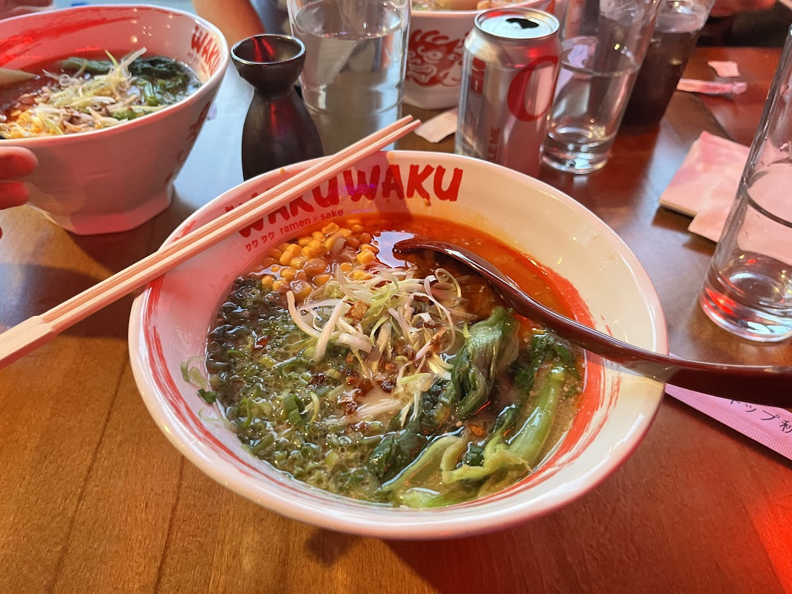

WakuWaku Ramen - Signature Ramen

- Price: $18
- Rating: 6/10
- Last date I had it : 2025-05-30
- Review: (First, I’ll preface that the ramen comes w a side of tonkatsu, but I’m only giving a review for the ramen) Why is there god damn corn? Anyway, now that that’s out of the way: I think this is pretty average or mediocre. The individual components are decent, but there’s a lot of improvements possible. The soup is kinda thin, both in terms of strength and saltiness. One can also consider the funkiness too weak as well, but that’s preference. The noods were probs too alkali-tasting and were overcooked, which I think is the opposite of what you want from tonkotsu style ramen. I think the scallion topping was nice and unique, and the bok choy is reasonable. The chili oil was also interesting but lacked punch. The bowl overall felt muted, and could have had additional brightness, either thru some more acid added from a topping or potentially as an extra flavor component to the chili oil. Else, don’t add the chili oil at all, and instead let the customer add if they want. I say this b/c the chili oil got repetitive real fast. Lastly, despite being the “signature” ramen, nothing felt unique nor stood out to be defined as an “identity.”